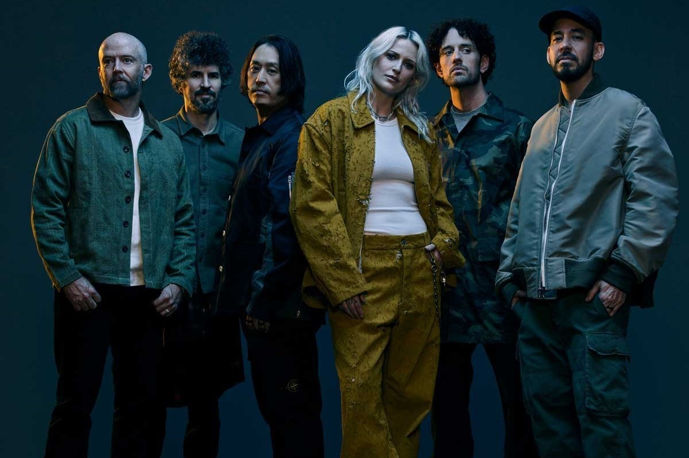
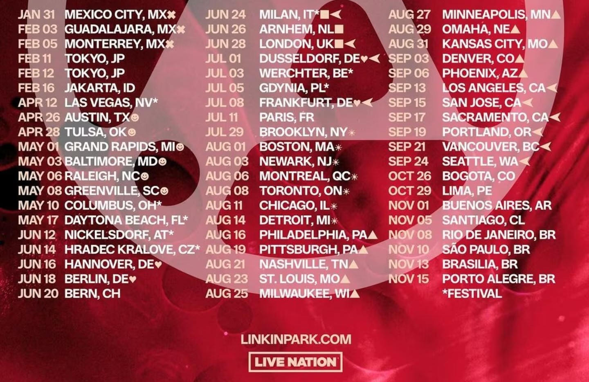

Linkin Park (2024)

Nuevo Álbum: Lanzamiento 15 de Noviembre (2024)

From Zero World Tour - Fechas 2025 - Argentinos del mundo

Linkin Park en Argentina (2017)
Linkin Park en Argentina (2012)

Linkin Park en Argentina (2010)
Resumen
Linkin Park es una banda de rock estadounidense formada en 1996, Agoura Hills, California. Originalmente influenciada por el nu-metal fusionando rock y hip-hop, han experimentado con diferentes géneros musicales, desde el rock electrónico hasta el pop. Su álbum debut "Hybrid Theory" fue el más vendido en 2001 y alcanzaron gran popularidad en los años 2000.
Tras el fallecimiento de Chester Bennington en 2017, anunciaron su regreso con el álbum "From Zero" en 2024, incorporando a la vocalista Emily Armstrong y al baterista Colin Brittain tras la salida de Rob Bourdon, lanzando así el sencillo "The Emptiness Machine", que rápidamente se volió de las 10 canciones mas escuchadas en Spotify.